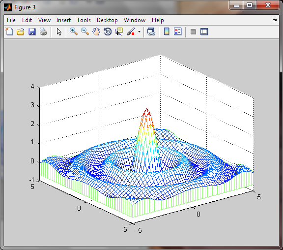

Faute de pouvoir donner un cours détaillé sur les graphiques 3D, je me contenterai de donner
quelques exemples pouvant servir de fil conducteur
lignes 3D
Le tracé de ligne en 3 dimensions est réalisé essentiellement par la fonction
plot3()
Exemple 1:
Tapez le petit programme suivant et donnez lui le nom plot3tst1.m. Exécutez le et observer le résultat
x = [0 1 2 2 2 2 2 2 2 2 1 0];
y = [0 0 0 0 1 2 2 1 0 0 0 0];
z = [0 0 0 1 1 1 2 2 2 3 3 3];
close all;
plot3(x,y,z,'-s','linewidth',2);
axis ij
grid;
xlabel('axe des X');
ylabel('axe des Y');
zlabel('axe des Z');

La fonction
axis a plusieurs utilisations possibles,
en voici un exemple:
plot3(sin(t),cos(t),t,'linewidth',2)
grid on
axis square
xlabel('sin(t)');
ylabel('cos(t)');
zlabel('t');
Groupe de lignes 3D
Si x, y, z sont des matrices, plot3() trace plusieurs lignes. Chaque ligne correspond à une
colonne z(x,y).
La fonction
meshgrid() permet de définir les matrices x et y correspondants à tous
les points (x,y) du plan xy. Ensuite il suffit de calculer l'élévation z de chaque point (x,y) et on a un objet 3D
Voyons comment on peu définir tous les points du plan xy ci-dessous
x = 0:10 --> x = [0 1
2 3 4 5
6 7 8 9 10]
y = 0:3 --> y = [0 1 2 3]
[yy, xx] = mesgrid(y,x)
Le résultat est obtenu sous forme de deux matrices, une pour les x, l'autre pour les y
yy =
0 1 2 3
0 1 2 3
0 1 2 3
0 1 2 3
0 1 2 3
0 1 2 3
0 1 2 3
0 1 2 3
0 1 2 3
0 1 2 3
0 1 2 3
xx =
0 0 0 0
1 1 1 1
2 2 2 2
3 3 3 3
4 4 4 4
5 5 5 5
6 6 6 6
7 7 7 7
8 8 8 8
9 9 9 9
10 10 10 10
Il reste maintenant à définir la matrice z qui définit l'élévation de chaque point (x,y). C'est ce qui est
présenté sur l'exemple ci dessous.
Exemple 3:
x = 0:10;
y = 0:3;
[yy, xx] = meshgrid(y, x);
z=zeros(11,4);
z(:,1) = [0 1 0 1 0 1 0 1 0 1 0]; % 1ère colonne = courbe 1
z(:,2) = [0 0 1 1 1 0 0 1 1 0 0]; % 2ème colonne = courbe 2
z(:,3) = [0 1 1 0 0 0 1 1 0 1 1]; % 3ème colonne = courbe 3
z(:,4) = [0 0 1 1 2 2 1 1 0 0 1]; % 4ème colonne = courbe 4
close all;
plot3(xx, yy, z, 'LineWidth',2);grid;
Exemple 4:
Dans l'exemple ci-dessous, on va tracer la fonction
sinc(t-to) qui n'est rien d'autre
que la fonction
sinc(t) décalée de
to. Rappelons au passage que
sinc(t)=sinc(πt)/t.
t = 0:0.1:10; % axe des x
to = 0:2:6;
[tt, tt0] = meshgrid(t,t0);
dt = tt - tt0 + eps; % le eps est ajouté juste pour éviter la division par 0
z = sin(pi*dt) ./ (dt);
close all,
plot3(tt, yy0, abs(z));
axis('ij');
grid;
xlabel('t');
ylabel('to');
zlabel('sinc(t-t0)');
Surfaces 3D
Les fonctions intervenant dans le tracé de surfaces 3D son nombreuses. Parmi elles :
mesh,
surf, meshgrid, camlight …
Voici quelques propriété de l'objet surface:
| Propriété |
Description |
| EdgeColor |
Couleur des contours des facettes individuelles constituant la surface.
Valeurs : ColorSpec, none, flat, interp(olation) |
| FaceColor |
Couleur des facettes individuelles constituant la surface.
Valeurs : ColorSpec, none, flat, interp(olation) |
| FaceLighting |
Détermine la méthode d'application de l'éclairage
{none} | flat | gouraud | phong |
| LineStyle |
Style de ligne |
| LineWidth |
Epaisseur du trait |
| Marker |
Marqueur à placer sur les intersections des lignes |
| MarkerSize |
Taille des marqueurs |
| MeshStyle |
Précise les lignes à tracer {both} | row | column |
| Visible |
Rend la surface visible ou invisible |
| Parent |
Pour préciser sur quel axe sera tracé la surface |
La fonction mesh()
La fonction
mesh() trace des surfaces de type fil de fer.
Exemple 1:
Exécuter le programme ci-dessous et observez les trois figures, les fonctions meshc() et meshz() rajoutent une
projection sur le plan xy
[x,y] = meshgrid(-5:0.2:5);
r = sqrt(x.^2 + y.^2) + eps;
z = sin(pi*r) ./ r;
close all;
mesh(x, y, z);
figure;
meshc(x, y, z);
figure;
meshz(x, y, z);

La fonction surf()
La fonction
surf() trace des surfaces avec plus de possibilités que la fonction
mesh().
Exemple 2:
Exécutez le programme ci-dessous et observez les résultats.
[x,y] = meshgrid(-5 : 0.2 : 5);
r = sqrt(x.^2 + y.^2) + eps;
z = sin(pi*r) ./ r;
close all;
surf(x, y, z);
figure;
surf(x, y, z,'FaceColor','interp','FaceLighting','phong','EdgeColor','none');
daspect([5 5 5])
axis tight
view(-50,30)
camlight left
Exemple 3 :
Exécuter le programme ci-dessous et et observez les résultats.
[X,Y,Z] = peaks(30);
close all;
surf(X,Y,Z)
axis([-3 3 -3 3 -10 5])
figure;
surf(X,Y,Z,'FaceColor','interp','FaceLighting','phong','EdgeColor','none');
axis tight
camlight left
Réduisez la fenêtre MATLAB afin que la figure 2 soit visible et essayer les commandes suivantes tout en observant
leur effet sur la figure.
view(30,30)
view(45,30)
view(60,30)
view(135,30)
view(-135,30)
view(-45,30)
view(30,60)